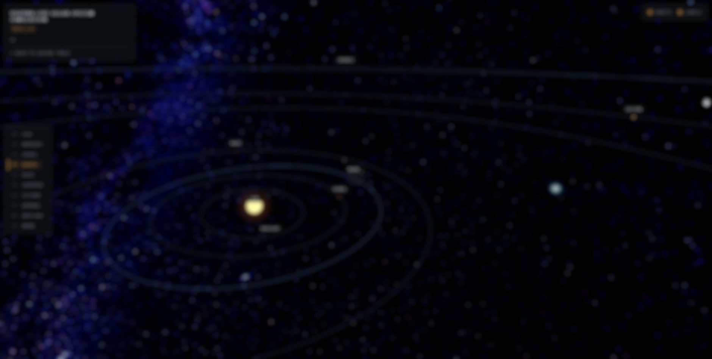
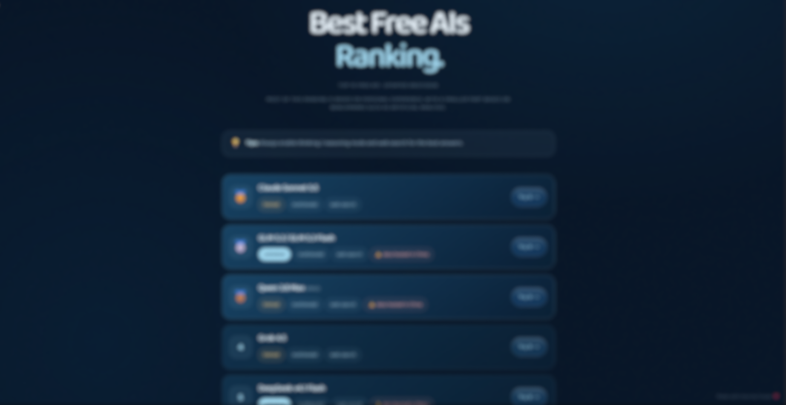

OVERVIEW / TODAY
Data, without friction.
Everyday life is complicated enough. Usuyna builds small, simple tools that remove the friction — no noise, no hype, just things that work.
friction−82%after tools
signal · stable
tools live03 / 03uptime 99.9%
SCROLL TO EXPLORE
01 — What we do
You have enough
to do. Our tools handle the rest.
1problem → 1 tool. We design small, focused tools that solve one everyday problem at a time — so your days get simpler, not busier.
02 — Our tools
Small tools,
big time savings.
Each tool is free, focused and built around a single everyday need.

01 · LIVE 3DUsuyna Live Solar System Simulation Beta 1.0Real-time 3D positions of the planets and the Moon — live clock, no pause, works offline.Live — Launch simulation
02 · TOP 10Best Free AIs RankingThe 10 best free AIs you can use right now — unlimited, multimodal, with web search.Live — View ranking 03 · IDE/CLIBest Free IDE / CLI AI Coding Agents RankingThe best free coding agents for your IDE and terminal — quotas, models, links.Live — View ranking03 — How it works
Less friction.
More life.
Our approach starts with a real everyday problem and ends with a tool so simple you forget it's there. We build, test and refine each tool until it just works — so simplifying your day stops being a chore.
01
ListenSpot a real problem from everyday life.
▂02
BuildCraft the simplest tool that solves it.
▅03
SimplifyRefine it until it disappears into your routine.
█04 — Shall we talk?
Wish something in your
day was easier?
Tell us what slows you down, what you've tried or what you dream of — we might just build it.
usuyna@gmail.com